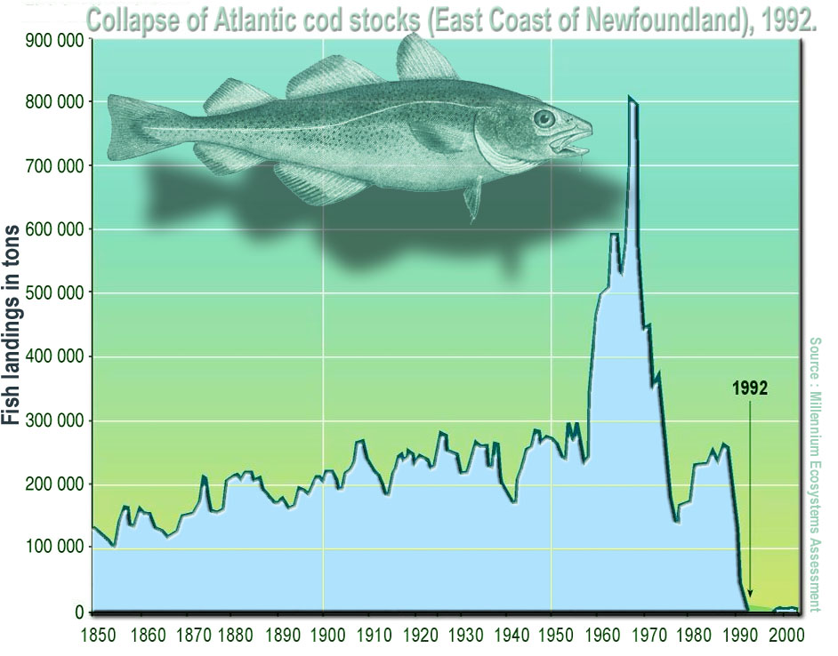

Today’s Agenda
II. Evaluating Policy Design Options
- Adaptive Governance Policies
Justin Leinaweaver (Spring 2024)
Assignment 4
Getting Involved in our Community
Find or create an opportunity to get actively involved in your issue locally (e.g. litter pickup, river cleanup, working with a local NGO or city agency on your issue, etc.)
Write a report describing what you did, who you worked with and what you learned that will help you with solving your chosen policy problem.
Section 2
Evaluating Policy Design Options
Command & Control Regulations
“Green” Taxes
“Green” Subsidies
Adaptive Governance
Policy Design Approach 3
“Green” Subsidies
Policy Design Option 4: Adaptive Governance
Elinor Ostrom (1933-2012)

NOBEL PRIZE WINNER Elinor Ostrom

NOBEL PRIZE WINNER Elinor Ostrom
“What we have ignored is what citizens can do and the importance of real involvement of the people involved - versus just having somebody in Washington make a rule.”

Common Pool Resources (CPR)
…refers to a natural or man-made resource system that is sufficiently large as to make it costly (but not impossible) to exclude potential beneficiaries from obtaining benefits from its use (Ostrom 1990, 30).
Common Pool Resources (CPR)

Common Pool Resources (CPR)
Common Pool Resources (CPR)
| Resource Systems | Resource Units |
|---|---|
| Fishing Grounds | Tons of fish |
| Groundwater Basins | Cubic meters of water |
| Irrigation Canals | Cubic meters of water |
Common Pool Resources (CPR)
| Resource Systems | Resource Units |
|---|---|
| Fishing Grounds | Tons of fish |
| Groundwater Basins | Cubic meters of water |
| Irrigation Canals | Cubic meters of water |
| Public Grazing Areas | Tons of fodder |
How is this a CPR problem?
Common Pool Resources (CPR)
| Resource Systems | Resource Units |
|---|---|
| Fishing Grounds | Tons of fish |
| Groundwater Basins | Cubic meters of water |
| Irrigation Canals | Cubic meters of water |
| Public Grazing Areas | Tons of fodder |
| River | Tons of waste absorbed |
Common Pool Resources (CPR)
| Resource Systems | Resource Units |
|---|---|
| Fishing Grounds | Tons of fish |
| Groundwater Basins | Cubic meters of water |
| Irrigation Canals | Cubic meters of water |
| Public Grazing Areas | Tons of fodder |
| River | Tons of waste absorbed |
| Parking Lot | Parking spaces filled |
Common Pool Resources (CPR)
| Resource Systems | Resource Units |
|---|---|
| Fishing Grounds | Tons of fish |
| Groundwater Basins | Cubic meters of water |
| Irrigation Canals | Cubic meters of water |
| Public Grazing Areas | Tons of fodder |
| River | Tons of waste absorbed |
| Parking Lot | Parking spaces filled |
| Bridge | Number of crossings |
Ostrom’s CPR Cases
- Torbel, Switzerland
- Villages in Japan
- Huertas in Valencia
- Huertas in Murcia and Orihuela
- Huertas in Alicante
- Zanjeras in the Philippines
Ostrom’s CPR Cases
Small CPRs only
CPR fits in one country
15,000 maximum participants
Users dependent on CPR
Ostrom’s Design Principles
- Clearly defined boundaries.
- Congruence between appropriation / provision rules and local conditions
- Collective-choice arrangements
- Monitoring
- Graduated Sanctions
- Conflict-resolution mechanisms
- Minimal recognition of rights to organize
- Nested enterprises
1. Clearly Defined Boundaries
2. Match Rules to Local Conditions
3. Collective-Choice Arrangements
4. Monitoring
5. Graduated Sanctions
6. Conflict-Resolution Mechanisms
7. Recognition of Rights to Organize
8. Nested Enterprises
Ostrom’s Design Principles
- Clearly defined boundaries.
- Congruence between appropriation / provision rules and local conditions
- Collective-choice arrangements
- Monitoring
- Graduated Sanctions
- Conflict-resolution mechanisms
- Minimal recognition of rights to organize
- Nested enterprises
For Next Class
Submit to Canvas a real world example of this approach being used to successfully address an environmental problem similar to the one in your project.
Present as an argument: This case shows that addressing environmental problem X can be done successfully using adaptive governance policies.